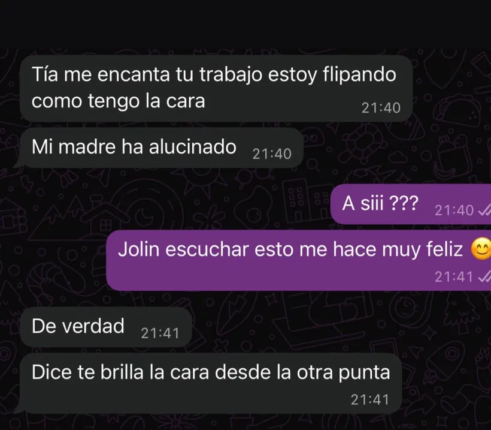

Limpieza facial K-Beauty · Granollers
Limpieza facial e higiene facial profunda en Granollers
Limpieza facial vegana K-Beauty, masaje y masaje capilar por 50 €, en una cita de aproximadamente 1 hora. Valoramos el estado de tu piel para adaptar la higiene y te orientamos sobre la rutina posterior. El servicio se realiza con cita previa en Granollers; puedes consultar disponibilidad antes de confirmar.


Opinión auténtica
“Me encanta tu trabajo. Me dicen que me brilla la cara desde la otra punta.”Clienta de Nohuska · tratamiento facial
Higiene y limpieza facial: qué vas a reservar
Son dos nombres para el mismo servicio de cuidado facial en Nohuska. K-Beauty y vegano describen nuestro enfoque, no un suplemento ni otra cita. Adaptamos la higiene a la piel; una mayor intensidad no es siempre la mejor opción.
Cuándo puede encajar
Una limpieza facial adaptada a lo que notas.
La valoración permite decidir si el protocolo puede ayudarte cuando notas la piel congestionada, textura irregular, exceso de grasa, tirantez o una rutina que ya no te funciona.
- Quieres revisar poros, textura e hidratación.
- Buscas una higiene profunda sin un protocolo idéntico para todas.
- Tienes dudas sobre los productos que utilizas en casa.
- Prefieres recibir una orientación sencilla después del tratamiento.
Cuéntanos cómo está tu piel
Explícanos qué notas y qué días te van bien. Te orientaremos antes de reservar.
Consultar mi pielAntes y después de la cita
Cómo preparar tu consulta facial
- Cuéntanos qué notas y desde cuándo: congestión, textura, grasa, sequedad o sensibilidad.
- Indica qué productos utilizas y si te has realizado algún procedimiento recientemente; esa información ayuda a adaptar la higiene.
- Si la piel está irritada, comunícalo antes de acudir para decidir si conviene adaptar o aplazar la cita.
- Al finalizar, pide que revisemos contigo la rutina y las pautas de cuidado. La frecuencia de las próximas visitas se decide según tu evolución.
Qué incluye tu limpieza facial por 50 €
La sesión completa dura aproximadamente 1 hora. Al terminar te orientamos sobre la rutina y los cuidados posteriores.
Tu cita facial en Granollers
El servicio se realiza en Avinguda Sant Esteve, 40, 08402 Granollers. Si vienes desde otra localidad del Vallès Oriental, confirma el horario antes de desplazarte.
Preguntas frecuentes sobre limpieza facial
¿Qué incluye la limpieza facial profunda?
Incluye limpieza facial vegana K-Beauty, masaje y masaje capilar. Empezamos valorando el estado de la piel para adaptar la higiene y, al terminar, explicamos una rutina sencilla. La cita dura aproximadamente 1 hora.
¿Cuánto cuesta la limpieza facial en Nohuska?
El precio es de 50 € e incluye limpieza facial vegana K-Beauty, masaje y masaje capilar en una cita de aproximadamente 1 hora.
¿Cuál es la diferencia entre higiene y limpieza facial?
En Nohuska utilizamos ambos términos para explicar un protocolo de higiene facial adaptado. La profundidad y las fases se deciden según la piel, no por una plantilla fija.
¿Cuánto dura la cita de limpieza facial?
La cita dura aproximadamente 1 hora. El protocolo se adapta al estado de la piel.
¿Sirve para piel sensible?
La sensibilidad debe valorarse antes de elegir el protocolo. Adaptamos el tratamiento o recomendamos aplazarlo si la piel está irritada o existe alguna contraindicación.
¿Cada cuánto conviene hacer una higiene facial profunda?
No existe una frecuencia idéntica para todas las pieles. Depende de su estado, tus hábitos, la sensibilidad y la rutina; te orientamos después de valorar el caso.
¿Dónde hacéis higiene facial en Granollers?
En Nohuska Beauty Lab, Avinguda Sant Esteve, 40, 08402 Granollers, con cita previa.
¿La valoración facial es gratuita?
Sí. Escríbenos por WhatsApp para explicar cómo notas tu piel y concertar una valoración gratuita.
Más información y tratamientos
Consulta los próximos huecos para tu higiene facial.
Cuéntanos cómo notas tu piel y qué días te van bien.